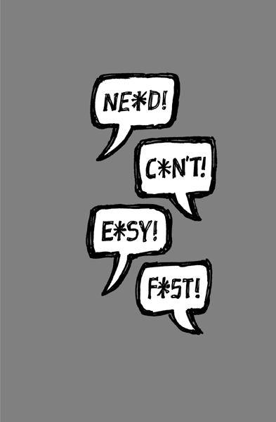

{% include JB/setup %}
{% raw %}
<div>

<h2 id="filepos248631" class="calibre19"><span class="calibre2"><a class="calibre13"></a><strong class="calibre14">Sound like you</strong></span></h2><div class="calibre4"></div>
<p class="calibre7">What is it with businesspeople trying to sound big? The stiff language, the formal announcements, the artificial friendliness, the legalese, etc. You read this stuff and it sounds like a robot wrote it. These companies talk <em class="italic1">at</em> you, not <em class="italic1">to</em> you.</p>
<p class="calibre17">This mask of professionalism is a joke. We all know this. Yet small companies still try to emulate it. They think sounding big makes them appear bigger and more "professional." But it really just makes them sound ridiculous. Plus, you sacrifice one of a small company's greatest assets: the ability to communicate simply and directly, without running every last word through a legal-and PR-department sieve.</p>
<p class="calibre17">There's nothing wrong with sounding your own size. Being honest about who you are is smart business, too. Language is often your first impression--why start it off with a lie? Don't be afraid to be you.</p>
<p class="calibre17">That applies to the language you use everywhere--in e-mail, packaging, interviews, blog posts, presentations, etc. Talk to customers the way you would to friends. Explain things as if you were sitting next to them. Avoid jargon or any sort of corporate-speak. Stay away from buzzwords when normal words will do just fine. Don't talk about "monetization" or being "transparent;" talk <a class="calibre16"></a>about making money and being honest. Don't use seven words when four will do.</p>
<p class="calibre17">And don't force your employees to end e-mails with legalese like "This e-mail message is for the sole use of the intended recipient(s) and may contain confidential and privileged information." That's like ending all your company e-mails with a signature that says, "We don't trust you and we're ready to prove it in court." Good luck making friends that way.</p>
<p class="calibre17">Write to be read, don't write just to write. Whenever you write something, read it out loud. Does it sound the way it would if you were actually talking to someone? If not, how can you make it more conversational?</p>
<p class="calibre17">Who said writing needs to be formal? Who said you have to strip away your personality when putting words on paper? Forget rules. Communicate!</p>
<p class="calibre17">And when you're writing, don't think about all the people who may read your words. Think of one person. Then write for that one person. Writing for a mob leads to generalities and awkwardness. When you write to a specific target, you're a lot more likely to hit the mark.</p>
<p class="calibre3"><a class="calibre16"></a></p><div class="calibre4"></div>
</div>

{% endraw %}

